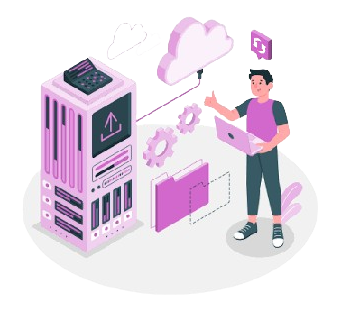
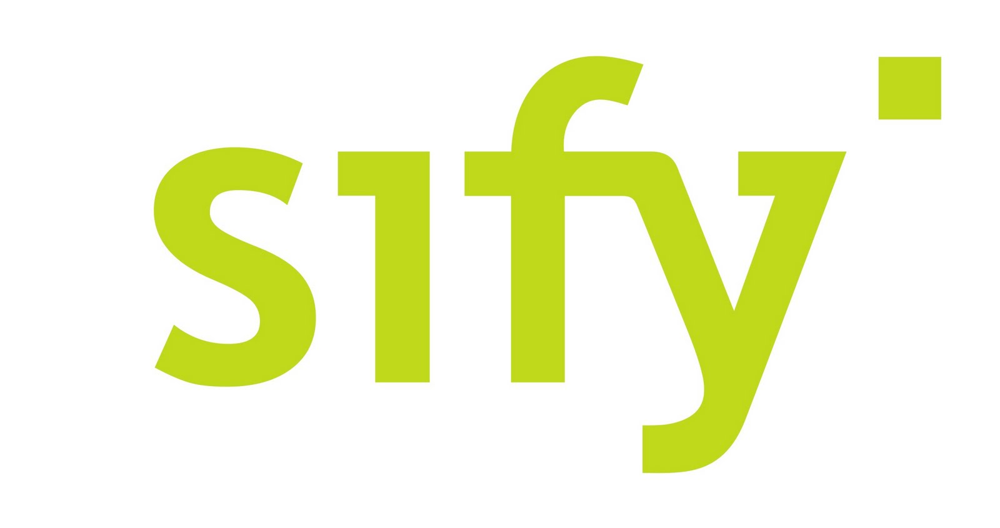
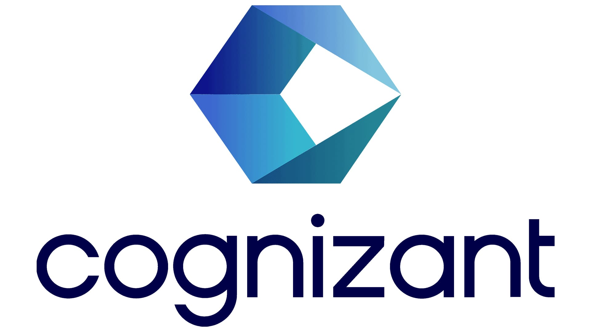

Suthish R
Network Engineer
Network Engineer
Mobile : 9080144097
Email : Suthishravichandran3@gmail.com
Current Location : Chennai
Email : Suthishravichandran3@gmail.com
Current Location : Chennai

About
This is Suthish. I am a civil engineering graduate, but I work in the information technology
industry. Because of my interests and learnings. I am currently working at Sify Technologies Limited as a
technical support engineer. On the day of work, if a customer or client contacts me via email or phone, I
should collect a dedicated circuit ID from the customer, do the FLT for the link, create the ticket, and
then share it with the customer. After that, I will work on the cases, do the troubleshooting, create the
internal task for level 2, the third team, and keep up with the follow-up on the ticket. I am continuously
learning about how the network is working globally and how the cloud services are working. The cloud
services are running successfully all over the world because of the network.
Skills

Experience


Certificates
.jpg)
Networking

Cloud Computing

Network
Network

Education